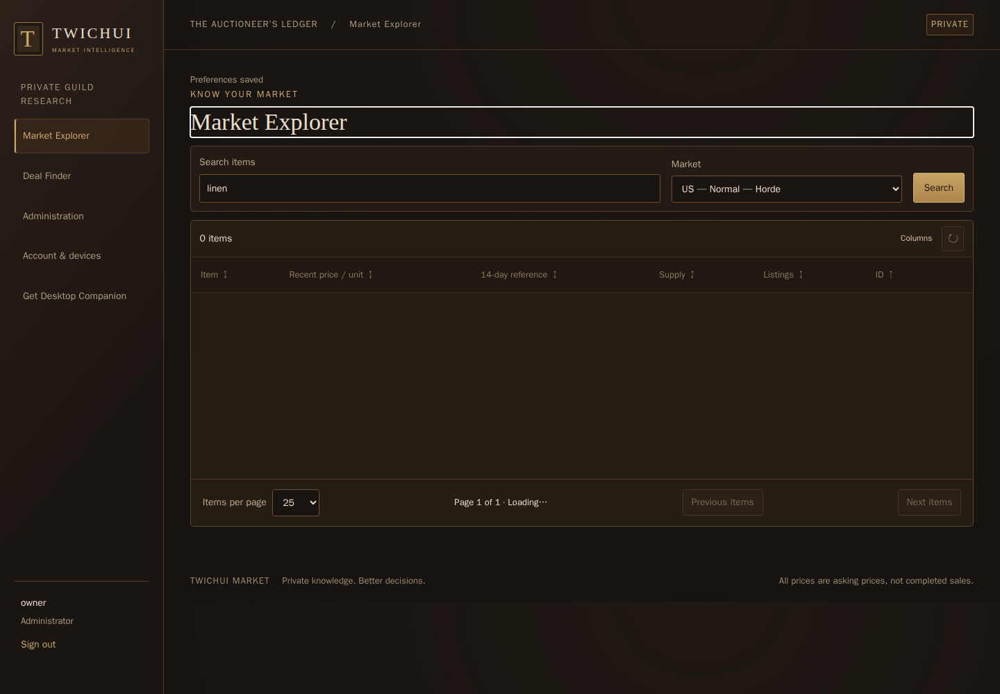
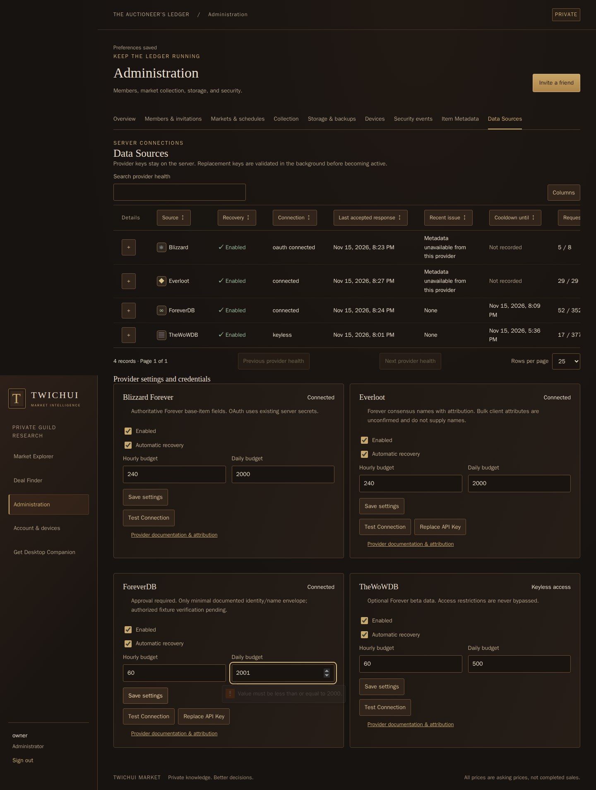
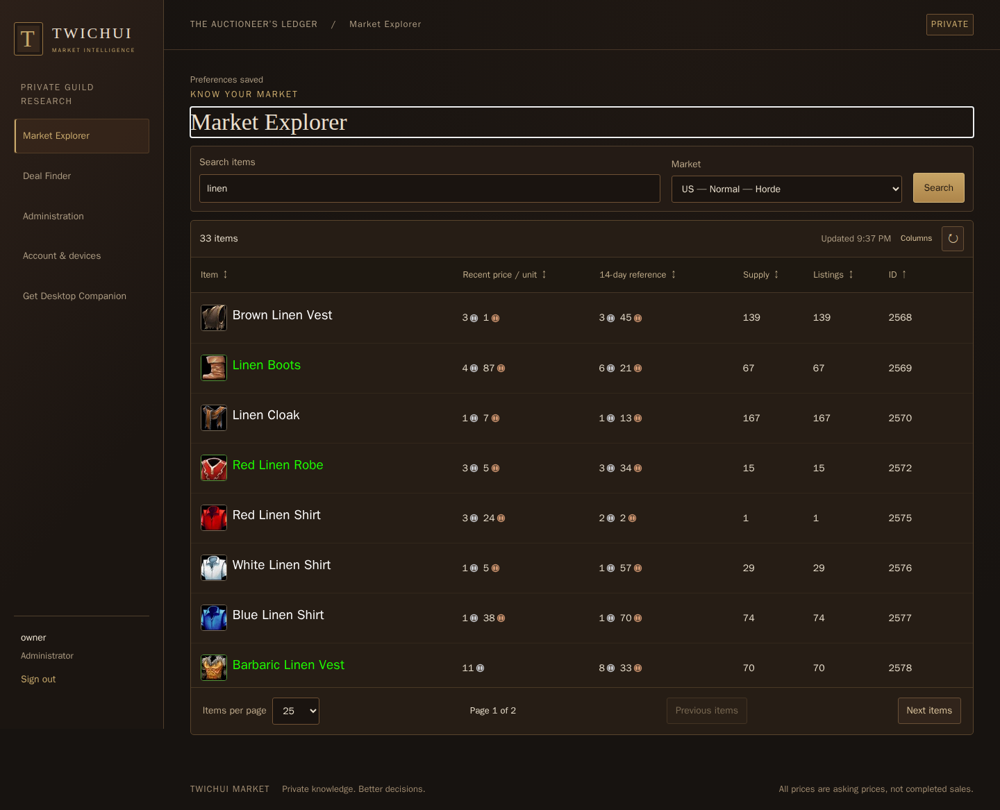
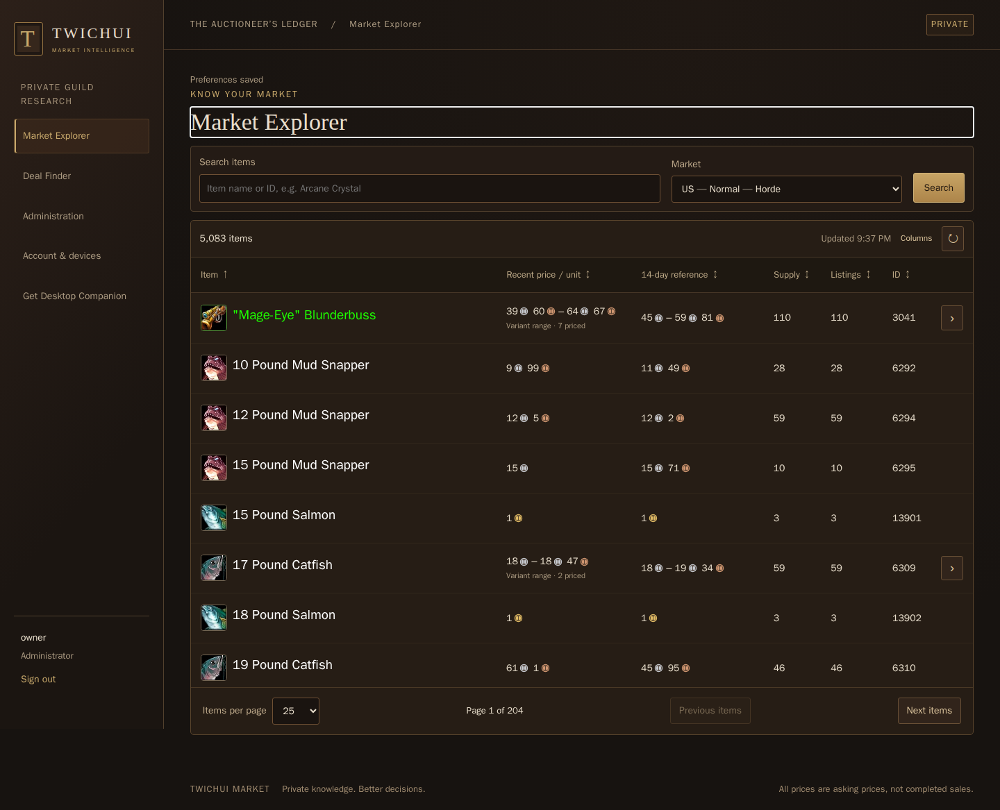
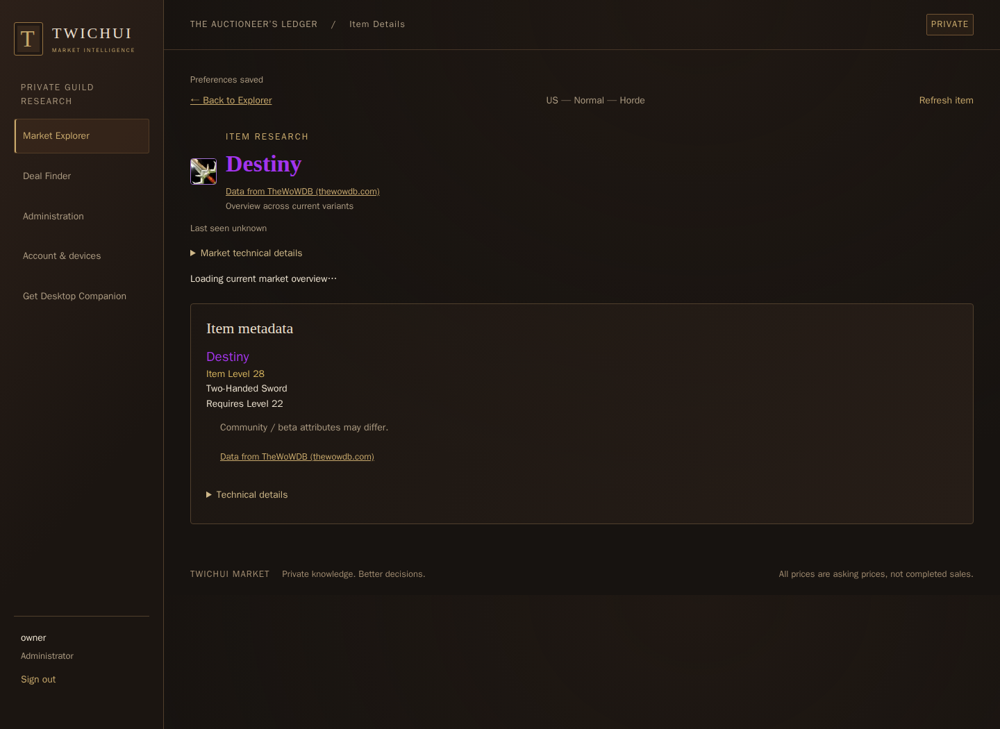
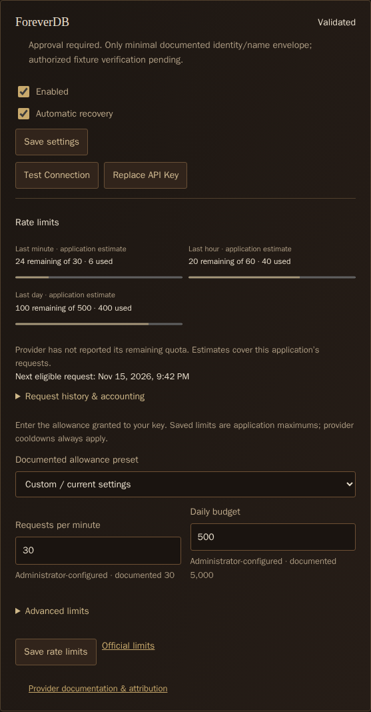
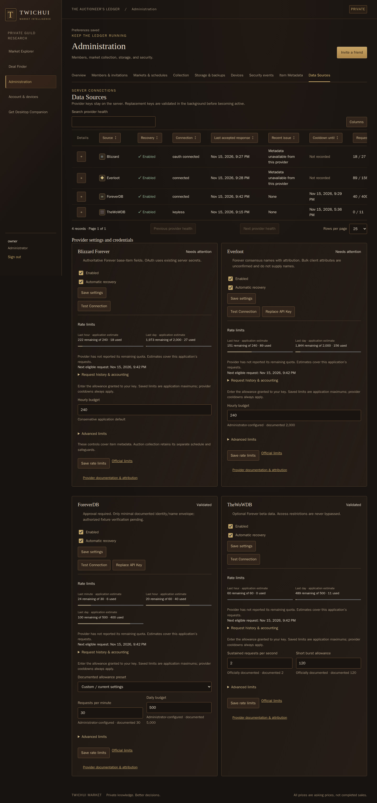

Authenticated https://market.twich.gg; real production data, trusted HTTPS, no mocked responses. After scenes use application 73617a9, schema rates_20261115. Screenshots display America/Denver time on November 15; host evidence is November 16 UTC. Click an image for its complete original.
499/day was a temporary conservative persistence check. Final active ForeverDB limits remain 60/hour and 500/day. Provider grants/remaining quota remain unknown unless observed; visible figures are application estimates. The real bridge-capacity hold is unchanged.






